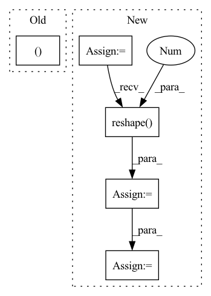

Pattern ID :3130
Before Change
log_std = self.std_clamp(log_std)
return mean, log_std
if __name__ == "__main__":
use_cuda = torch.cuda.is_available()After Change
else:
// todo: is clamp really necessary?
log_std = self.std_clamp(log_std)
std = log_std.exp()
m = MultivariateNormal(mean.reshape(-1), torch.diag(std.reshape(-1 ) ))
action = m.sample()
action = action.reshape(mean.shape)
action = action.tanh()
In pattern: SUPERPATTERN
Frequency: 3
Non-data size: 5
Instances Fragment ID: 10179306
Project Name: tmdt-buw/karolos
Commit Name: 39ca64b6106c80c48f0605a15cde575769fad233
Time: 2020-04-23
Author: scheiderer@uni-wuppertal.de
File Name: agents/nnfactory/sac.py
M Class Name: Policy
N Class Name: Policy
M Method Name: forward(3)
N Method Name: forward(2)
M Parent Class: nn.Module
N Parent Class: nn.Module
M File Name: agents/nnfactory/sac.py
N File Name: agents/nnfactory/sac.py
M Start Line: 100
M End Line: 102
N Start Line: 95
N End Line: 115
Before Change
def forward(self, voting_map, targets=None):
batch_size, channels, width, height = voting_map.shape
voting_map = voting_map.view(batch_size, self.region_num, self.num_classes, width, height)
heatmap = torch.zeros((batch_size, self.num_classes, width, height ), dtype=torch.float).cuda()
for i in range(self.num_classes):
heatmap[:, i, :, :] = self.deconv_filters(voting_map[:, :, i, :, :]).squeeze(dim=1)
After Change
if self.model_v1:
batch_size, channels, width, height = voting_map.shape
voting_map = voting_map.view(batch_size, self.region_num, self.num_classes, width, height)
voting_map = voting_map.permute(0, 2, 1, 3, 4)
voting_map = voting_map.reshape( batch_size, -1 , width, height)
heatmap = self.deconv_filters(voting_map)
return heatmap
Fragment ID: 10179304
Project Name: nerminsamet/houghnet
Commit Name: b441d732dd6f90811cc153b24d8b7718558e4f36
Time: 2021-04-13
Author: nermin.samet@gmail.com
File Name: src/lib/models/networks/hough_module.py
M Class Name: Hough
N Class Name: Hough
M Method Name: forward(3)
N Method Name: forward(3)
M Parent Class: nn.Module
N Parent Class: nn.Module
M File Name: src/lib/models/networks/hough_module.py
N File Name: src/lib/models/networks/hough_module.py
M Start Line: 91
M End Line: 97
N Start Line: 117
N End Line: 123
Before Change
def forward(self, x):
q, k, v = (self.to_q(x), self.to_k(x), self.to_v(x))
b, _, h, w = q.shape
q = q.reshape(b, self.heads, -1, h * w)
k = k.reshape(b, -1, h * w)After Change
v = v.reshape(b, -1, h * w)
if context is not None:
context = context.reshape(b, c, 1, -1)
ck = self.to_k(context).reshape( b, k_dim, -1 )
cv = self.to_v(context).reshape(b, k_dim, -1)
k = torch.cat((k, ck), dim=2)
v = torch.cat((v, cv), dim=2)
k = k.softmax(dim=2) Fragment ID: 10179295
Project Name: lucidrains/linear-attention-transformer
Commit Name: f04e0077c5dae59973f4ab232fbaa0b32b37a80e
Time: 2020-06-12
Author: lucidrains@gmail.com
File Name: linear_attention_transformer/images.py
M Class Name: ImageLinearAttention
N Class Name: ImageLinearAttention
M Method Name: forward(3)
N Method Name: forward(2)
M Parent Class: nn.Module
N Parent Class: nn.Module
M File Name: linear_attention_transformer/images.py
N File Name: linear_attention_transformer/images.py
M Start Line: 24
M End Line: 24
N Start Line: 23
N End Line: 39